Arbolus is an expert insights platform. Private equity firms and consultants use it to capture attributable buyer perspectives on tech companies before, during and after a deal. I joined as one of two product designers, paired with Diego in Italy, and led design across the platform redesign, the company's first real design system, and four new product surfaces, Canopy, AI Summaries, Channels and Connect.
Arbolus turns conversations with real B2B buyers into structured, attributable data. Private equity firms, consultants and corporate development teams use it to validate a thesis before a deal, track companies post-investment, and monitor portfolio health. The platform spans Canopy async video Q&A, scheduled Calls, Surveys & Panels, the Channels library of pre-recorded expert answers, Connect for native expert calls, and an AI layer that summarises responses at scale.
Two audiences share the same product. Experts are the operators, executives and former buyers contributing time, often paid $200–$500 per call. Clients are the PE and consulting firms paying for the insight. They have very different mental models of what trust looks like, and the platform has to earn it from both sides.
Experts contributing buyer perspectives on one side, PE associates and consultants consuming them on the other. Different mental models, different trust signals, the same underlying database.
Generative models drive Canopy summaries, transcript search, expert matching and scoring. The design problem was making probabilistic output feel honest to a managing director who has never read a model card, and tying every claim back to an attributable quote.
Financial services regulation, expert vetting and GDPR meant no shortcut was free. Every change to a label, attribution or flow went through compliance before it shipped.
The platform had two years of feature work behind it and no design system holding it together. Every team had shipped what they needed in the way that made sense to them. The result was a product with most of the right capabilities and very few of them visible.
Three patterns kept showing up in research. None of them were about missing features.
Customer profiles and Canopy responses surfaced over forty fields with no hierarchy. The insight a PE associate needed for a Monday partner meeting was sitting next to metadata that was never read.
Attribution, vetting and recency were buried three clicks deep. Sales kept having to confirm by email what the UI should have said on its own. Without those signals, partners would not quote a finding in a deal memo.
Twelve button styles, three modal patterns, no tokens. Engineering kept building the same things twice, and small inconsistencies were stacking up into a confidence problem.
"We're losing deals not because of the product, but because partners can't see the product in the ten minutes they have between meetings."
Two product designers, working back to back from the Barcelona office. We split the platform by surface, ran daily critique, and pair-reviewed everything that shipped. There was no system to inherit and no playbook to follow, just a backlog and a lot of customers waiting on improvements.
I owned the platform redesign, the Canopy AI surfaces, and the project dashboard, plus the design system underneath. Full cycle. Discovery, strategy, interaction and visual, handoff, post-launch validation. Plus the room time. Roadmap calls, stakeholder reviews, customer presentations.
Rather than a list of tickets, here is how the year clustered into strategic threads. Each one started with a hypothesis and ended with something we could measure.
Insight discovery was the company's main revenue lever. PE associates who could pull a credible buyer perspective into a deal memo kept renewing. The ones who couldn't, churned without ever feeling the product work.
The flow was technically functional but experientially broken. Too many steps, the wrong things on the wrong screens, and attribution signals filed in places no one looked.
"Trust is established before the first read. The insight page was doing the work of a CV, not a pitch."
Insight cards and customer profiles were restructured to answer "why this perspective for this thesis" before showing former titles and tenure. The drop-off was at the profile view, not at checkout. The content order was the problem.
Vetting, attribution and recency had their own page. We pulled them inline, surfacing them at the moment a client was deciding whether to quote a finding. Trust signals work best when they appear exactly when trust is being weighed.
The original Calls and Surveys request flow had seven steps with compliance gates in the middle. The new one had three, with compliance handled async after submission. The friction was never regulatory, it was the order things happened in.
The project dashboard is where a deal team spends most of its time. The redesign restructured it around the next decision, surfaced attribution and recency inline on every insight, and unlocked a heat-map view that lets a partner read a thesis in under a minute. Same data, same project, three points in the work below.
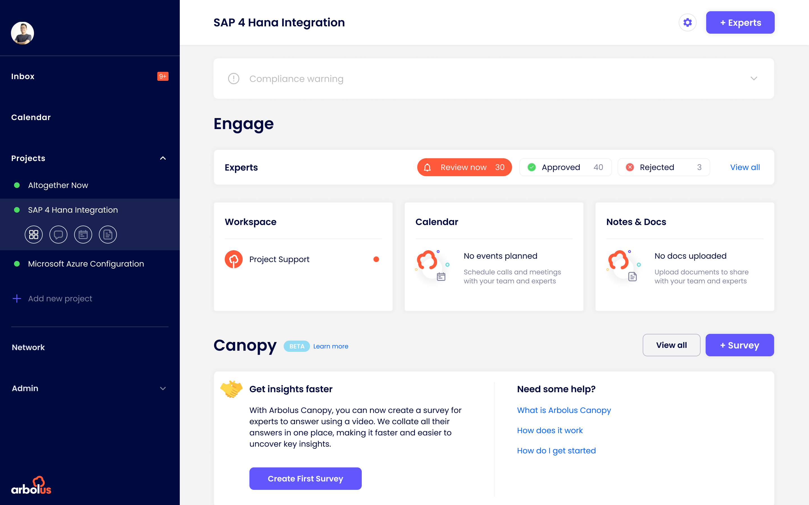
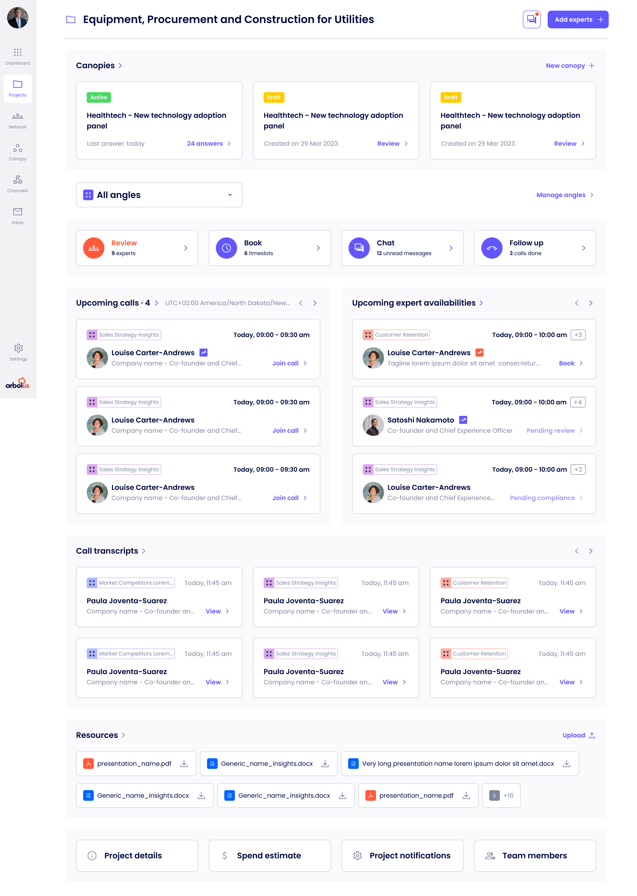
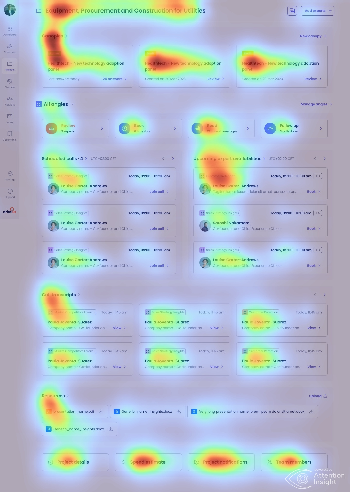
A sample from the year. Two user types, one product. Each surface had its own constraints: video on the expert side, scannability on the client side, attribution everywhere. Screens are presented as shipped, then iterated on quarterly after launch.
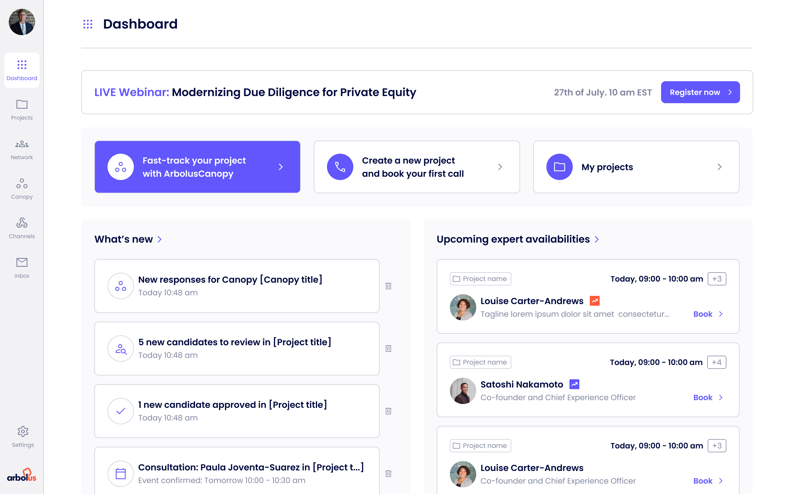
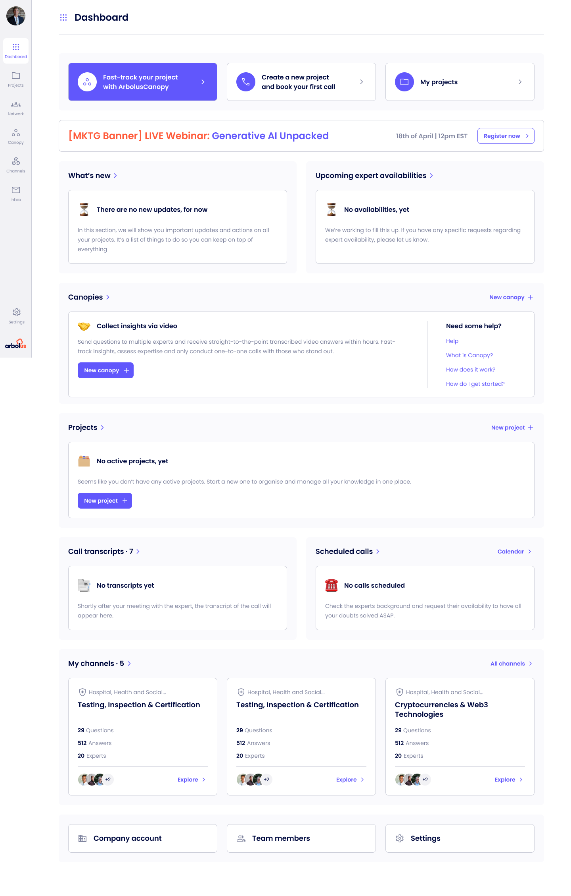
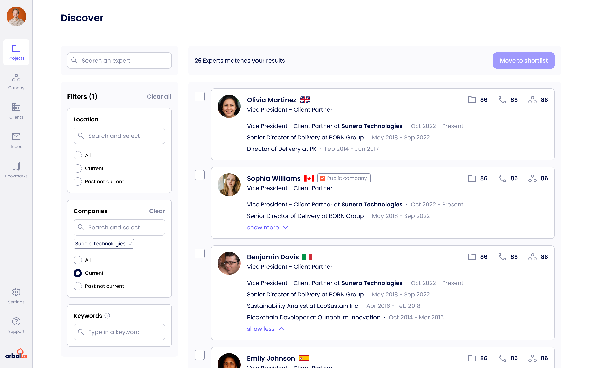
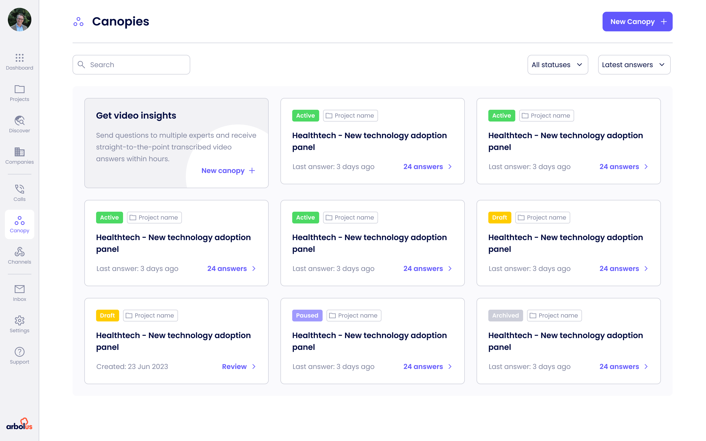
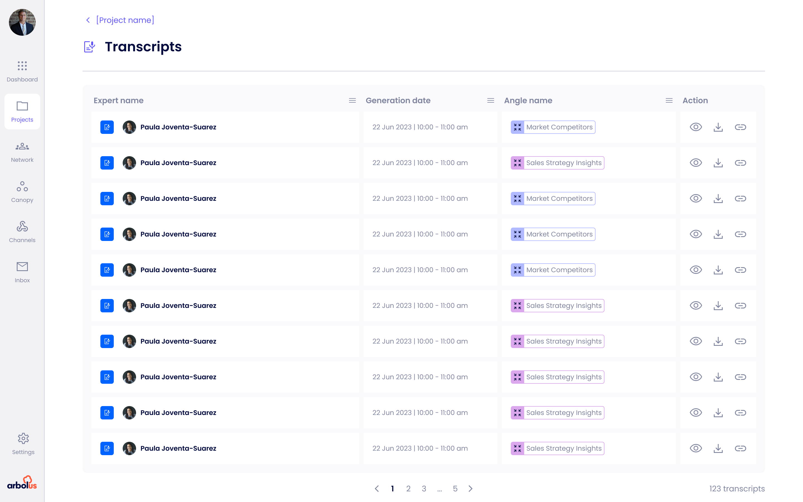
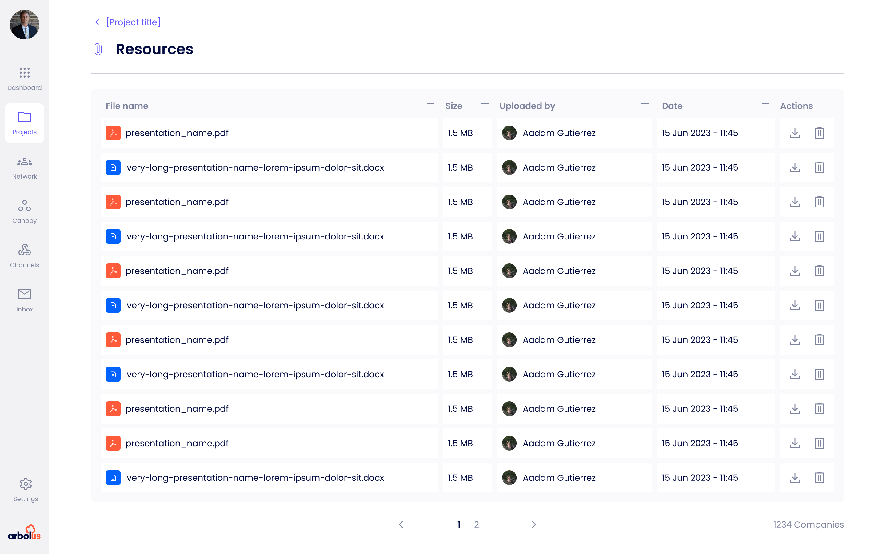
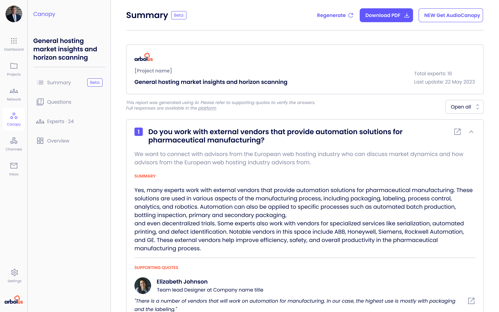
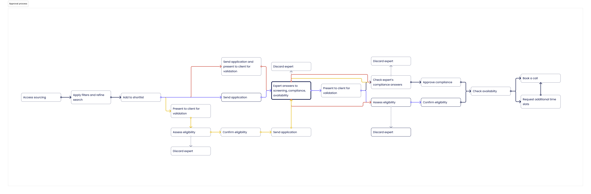
The system was not a side project. It was a survival tool. Without it, every new screen meant deciding which of three button patterns to use and guessing which spacing scale engineering had picked that month.
It was built incrementally, alongside feature work, starting with the parts that hurt most. Type, colour and spacing tokens first, then the grid. Previous grid was undocumented and inconsistent. New grid was twelve column, eight pixel base, three breakpoints.
| Before | → | After |
|---|---|---|
| Twelve button styles, no token set | → | One component system, one token set |
| Seven step request flow with compliance gates | → | Three step request, compliance handled async |
| Raw model output, scores without explanation | → | AI Summaries with reasoning and source quotes |
| Dozens of repeat calls to ask the same questions | → | Canopy and Channels, async by default |
| Third-party video stitched in for expert calls | → | Connect, native calls with transcript and compliance |
| Compliance buried in documentation | → | Trust signals woven into the flow |
| No design system, no shared grid | → | Eight tokens, twenty plus components, twelve column grid |
| No structured design process | → | Discovery, test, ship, measure |
Without the grid rebuild and the first round of tokens, every screen after would have been slower and messier. The compounding value of this kind of work is consistently underrated.
Customer-facing teams hear things formal research often misses. A monthly loop with sales became one of the cheapest and most reliable feedback mechanisms I had.
Framing each design call as a hypothesis with a measurable outcome changed the quality of every stakeholder conversation, and eventually changed my seat in the room.
Some impact claims are directional because analytics were not in place at baseline. I would push harder for instrumentation as a pre-launch requirement, not a post-launch task.
I treated compliance review as a gate rather than a collaborator. Earlier loops would have prevented a few late-stage redesigns and probably unlocked a couple of better patterns.
The conversion lift is directional. With proper testing infrastructure I could have shown harder numbers, and built a stronger case for the next initiative.